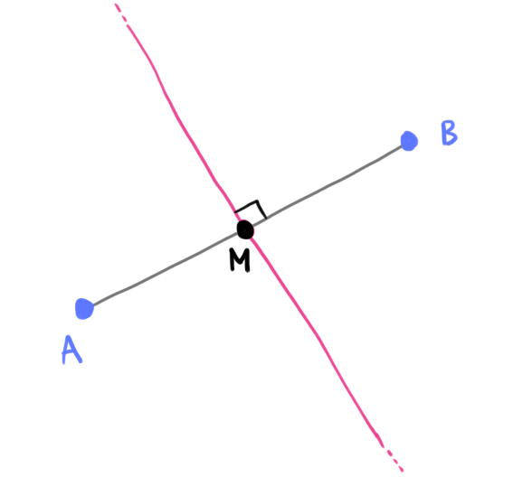

Compiti per casa
Esercizio 1
Stabilire il punto di intersezione tra le rette
\[
\begin{align*}
&r:\quad 18x - 4y - 5 = 0
\\\\
&s:\quad 5x + 2y - 1 = 0
\end{align*}
\]
Svolgimento:
Le rette \(r\) ed \(s\) si intersecano nel punto \(P\left(\dfrac{1}{4}\,;\,\,-\dfrac{1}{8}\right)\)
Esercizio 2
Consideriamo i punti
\[
A\left(2\,;\,\,-5\right) \qquad B\left(-6\,;\,\,3\right)
\]
Determinare l'asse del segmento \(AB\)
Suggerimento
Vi ricordo che l'asse di un segmento \(AB\) è una
retta che gode delle seguenti proprietà
-
è perpendicolare al segmento \(AB\);
-
passa per il punto medio del segmento \(AB\)

Soluzione:
L'asse del segmento \(AB\) è la retta di equazione \(y = x + 1\)
Esercizio 3
Consideriamo la retta \(r\) di equazione
\[
y = 5x - 1
\]
-
Consideriamo un punto \(P\) appartenente ad \(r\).
Se la sua coordinata \(x\) vale \(k\), che valore ha la corrispondente coordinata \(y\)?
Suggerimento:
Prima fatevi esempi con numeri concreti:
Ad esempio:
-
Se la sua coordinata \(x\) vale \(1\), che valore ha la corrispondente coordinata \(y\)?
-
Se la sua coordinata \(x\) vale \(2\), che valore ha la corrispondente coordinata \(y\)?
-
Stabilire se esiste un punto appartenente alla retta \(r\) avente distanza \(3\) dal punto \(A(3\,;\,\,-1)\)
Soluzione:
Esistono due punti della retta \(r\) aventi distanza \(3\) dal punto \(A\):
\[
P_1\left(0\,;\,\,-1\right) \qquad P_2\left(\dfrac{3}{13}\,;\,\,\dfrac{2}{13}\right)
\]